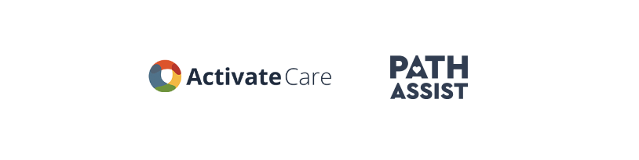

Unfortunately, I am unable to showcase the work I completed during my 2.5 years at Activate Care due to privacy restrictions. During this time, I served as the Senior UX Designer on the Solutions Team, which was comprised of UX Design, UX Research, Product, and our Care Team. In this role, I spearheaded the design of numerous projects and made significant accomplishments. Below, I will provide a concise overview of some of the key projects I worked on during this period.